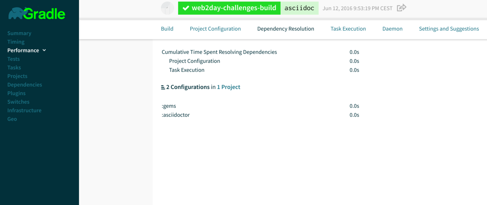
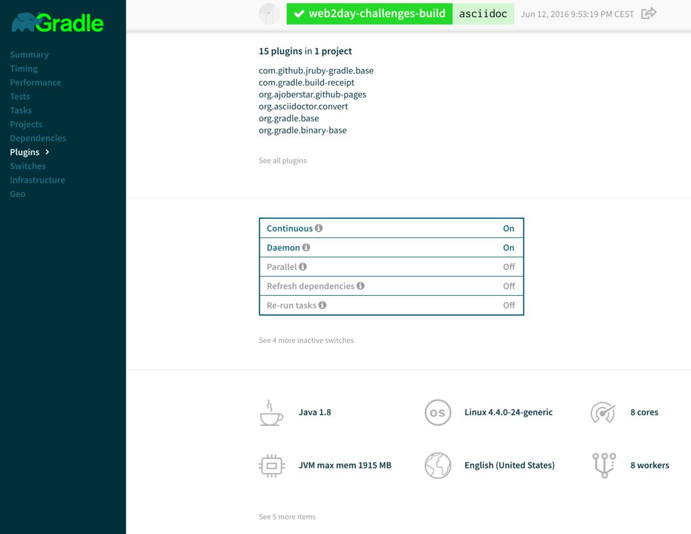

speaker {
name 'Cédric Champeau'
company 'Gradle Inc'
oss 'Apache Groovy committer',
successes (['Static type checker',
'Static compilation',
'Traits',
'Markup template engine',
'DSLs'])
failures Stream.of(bugs),
twitter '@CedricChampeau',
github 'melix',
extraDescription '''Groovy in Action 2 co-author
Misc OSS contribs (Gradle plugins, deck2pdf, jlangdetect, ...)'''
}Gradle and the Challenges of Modern Build Tools
by Cédric Champeau (@CedricChampeau)
Who am I

Groovy in Action 2

What is a build tool?
Make
Ant
Maven
Sbt
Grunt
Gradle
…
Why a build tool?
Automation
Integration of heterogeneous tools
compiler
code quality
IDE
deployment
Continuous integration
Continuous deployment
Software has evolved
Software is eating the world
No longer the IT crowd
From support to business
Different architectures
PHP
Big monolitic apps
Mobile apps
Multiplatform
Micro-services
Cloud
Different scale
Enterprise repositories
Ivy
Maven
Docker
Enterprise builds
Custom conventions
Corporate policies
New requirements
TDD / BDD
Integration tests
Functional tests
Build pipelines
In a word: automation
Why Gradle
Polyglot programming
Polyglot programming
Java / Groovy / Scala / Clojure / Kotlin / …
Javascript
Native (C/C++/…)
Swift
Python
Ruby
Multi-project builds
SVN vs Git
Multiple branches
DVCS
Commit hash as version
Mono-repo vs multi-repo
Usual tooling not adapted to multi-repo
Mono-repo cumbersome
Composite builds?
Dependency management
Dependency substitution
Variant-aware
API vs implementation
Compile avoidance
Dependency management
Dynamic versions caching / tuning
NPM anyone?
Build reproducibility
Deep modeling
Conventions are not rules
Models first
I want to build a Java library
I want to build an Android application
I want to build a micro-service
I want to build a Gradle plugin
Tools should not get in the way
Tools should model those
Conventions should be model aware
A Java library
model {
components {
main(JvmLibrarySpec) {
targetPlatform 'java8'
targetPlatform 'java9'
api {
exports 'com.acme.mylib'
}
}
}
testSuites {
test(JUnitTestSuiteSpec) {
jUnitVersion '4.12'
testing $.components.main
}
}
}Benefits of deep modelling
Deployment
Deployment
Bare metal
Cloud
Clever cloud
Heroku
AWS
CloudFoundry
OpenShift
Docker
Deployment
Apache Tomcat?
JBoss?
Wildfly?
Standalone (Spring Boot, vert.x, …)
Performance
Fast configuration
Fast execution
Incremental builds
Task cache
Local cache
Distributed cache
Performance
Analytics
Analytics

Analytics

Provenance
How did a task get configured?
Which plugins were applied?
Where does a dependency come from?
What came first?
Summary
Builds do not have to be painful
Gradle can help
It’s more than just a build tool!
We’re hiring!

Thank you!
Follow me: @CedricChampeau